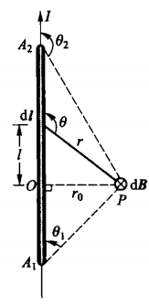

同号磁极相互排斥、异号磁极相互吸引.
地球是一个巨大的磁体，其N极位于地理南极附近、S极位于地理北极附近.
导线AB沿南北方向放置，下方有一可在水平面内自由转动的磁针.

导线中无电流通过时，磁针在地球磁场的作用下沿南北取向.
导线中通过电流时，磁针发生偏转：
电流方向由A指向B时，俯视磁针逆时针偏转.
电流方向由B指向A时，俯视磁针顺时针偏转.
电流可以对磁铁施加作用力.
组成磁铁的最小单元（磁分子）就是环形电流，这样一些分子环流定向排列，在宏观上就会显示出N、S极.
原子是由带正电的原子核与绕核旋转的负电子组成的.
电子不仅绕核旋转，还有自旋.
原子、分子等微观粒子内电子的这些运动形成了“分子环流”，这就是物质磁性的来源.
安培分子环流假说并非完全准确，但物质的磁性确实来源于电子的“运动”，确切来说，是电子的两种量子行为.
电流之间的相互作用规律.
安培定律是磁场的基本规律.
设\(\mathrm{d}\boldsymbol{F}_{12}\)为电流元1给电流元2的力，\(I_1\)与\(I_2\)分别为它们的电流强度，\(\mathrm{d}l_1\)与\(\mathrm{d}l_2\)分别为两线元的长度，\(r_{12}\)为两电流元之间的距离.
则\(\mathrm{d}\boldsymbol{F}_{12}\)的大小\(\mathrm{d}F_{12}\)满足：
$$\mathrm{d}F_{12} \propto \frac{I_1 I_2\mathrm{d}l_1\mathrm{d}l_2}{r_{12}^2}$$为定量描述磁场的分布，引入磁感应强度矢量\(\boldsymbol{B}\).
载流导线产生磁场的基本规律.
微分形式 $$\mathrm{d}\boldsymbol{B} = \frac{\mu_0}{4\pi}\frac{I\mathrm{d}\boldsymbol{l}\times\boldsymbol{e}_r}{r^2}$$整个闭合回路产生的磁场是各电流元产生的元磁场\(\mathrm{d}\boldsymbol{B}\)的叠加.

对于有限长直导线A1A2：
$$\begin{align} B &= \int_{A_1}^{A_2}\mathrm{d}B\\ &= \frac{\mu_0}{4\pi}\int_{A_1}^{A_2}\frac{I\mathrm{d}l\sin\theta}{r^2} \end{align}$$ $$r = \frac{r_0}{\sin(\pi-\theta)} = \frac{r_0}{\sin\theta}$$ $$l = r\cos(\pi-\theta) = -r\cos\theta = -r_0\cot\theta$$ $$\therefore \mathrm{d}l = r_0\csc^2\theta\mathrm{d}\theta$$ $$\begin{align} B &= \frac{\mu_0}{4\pi}\int_{\theta_1}^{\theta_2}\frac{\sin^2\theta}{r_0^2}\cdot I\sin\theta\cdot r_0\csc^2\theta\mathrm{d}\theta\\ &= \frac{\mu_0I}{4\pi r_0}\int_{\theta_1}^{\theta_2}\sin\theta\mathrm{d}\theta\\ &= \frac{\mu_0I}{4\pi r_0}(\cos\theta_1 - \cos\theta_2) \end{align}$$对于无限长导线，有：
$$\begin{cases} \theta_1 = 0\\ \theta_2 = \pi \end{cases}$$ $$\therefore B = \frac{\mu_0I}{2\pi r_0}$$无限长载流直导线周围的磁感应强度\(\boldsymbol{B}\)与距离\(r_0\)成反比.
单位[MKSA单位制]：\(T\cdot m^2\)
韦伯（\(Wb\)）
$$1Wb = 1T\times 1m^2$$恒磁场中，磁感应强度沿任何闭合环路\(L\)的线积分，等于穿过这个环路所有电流强度的代数和的\(\mu_0\)倍.
$$\oint_L\boldsymbol{B}\mathrm{d}\boldsymbol{l} = \mu_0\sum_{\mathrm{in}~L} I$$其中电流\(I\)的正负规定如下：
当电流方向与回路环绕方向服从右手法则时，\(I\gt0\)；反之\(I\lt0\).